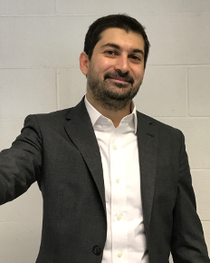

Simone Marini
Department of Epidemiology
University of Florida
2004 Mowry raod
Gainesville, FL 32603
simone _DOT marini AT_ ufl _DOT_ edu
Twitter
Linkedin
Google Scholar
Publons
CV (pdf)

As a scientist, I design prediction models for medicine and molecular biology with machine learning.
I am particularly interested in data integration, i.e. in developing models by harvesting heterogeneous data from genomics, proteomics, medical literature, ontologies, and knowledgebases. I coordinated multi-disciplinary, international research teams comprising medical doctors, biologists, and engineers, across 7 institutions in Europe, Asia, and America.
I have experience with supervised, unsupervised, semi-supervised, ensemble, and deep learning; SVMs, random forest, Bayesian networks, matrix factorization, and genetic algorithms. The application range of my models is broad, including protein affinity prediction, simulation of clinical trajectories in patients, single-cell RNA-seq data analysis, diabetes, and wound healing.
Education
2008-2012 PhD, Bioengineering. Thesis: “Qualitative and quantitative protein interaction prediction with machine learning”. Division of Bioengineering, Hong Kong University of Science and Technology, Hong Kong
2004-2007 MSc, Biomedical Engineering. Thesis: “Design of a classifier by coevolution of genetic algorithms and genetic programming”. Electrical, Computer and Biomedical Engineering department, University of Pavia, Italy
2000-2004 BSc, Biomedical Engineering. Thesis: “Bone tissue engineering, effects of mechanical shear stress on human osteoblast SAOS2”. Electrical, Computer and Biomedical Engineering department, University of Pavia, Italy
Professional Appointments
Research Assistant Professor
06/2020-present Department of Epidemiology, Emergent Pathogens Intitute, University of Florida, Gainesville, FL, USA
Artificial Intelligence Advisor
12/2016-present enGenome srl, Pavia, Italy
Research Assistant Scientist
01/2020-05/2020 Department of Epidemiology and Emergent Pathogens Intitute,University of Florida, Gainesville, FL, USA
Research Investigator
08/2017-12/2019 Department of Computational Medicine and Bioinformatics and Department of Surgery, University of Michigan, Ann Arbor, MI, USA
Postdoctoral Fellow
12/2016-07/2017, 01/2013-11/2016 Department of Elecrtical, Computer, and Biomedical Engineering, University of Pavia, Italy
11/2015-11/2016 Bioinformatics Center, Institute for Chemical Research, Kyoto University, Japan
Scientific publications
[*] denotes equal contribution. [§] denotes corresponding (senior) authorship.
Journals
- Sampling bias and incorrect rooting make phylogenetic network tracing of SARS-COV-2 infections unreliable. Mavian C, Kosakovsky Pond SL, Marini S, Magalis BR, Vandamme AM, Dellincour S, Scarpino SV, Houldcroft CJ, Villabona-Arenas J, Paisie TK, Trovão NS, Boucher C, Zhang Y, Scheuermann RH, Gascuel O, Lam TTY, Suchard MA, Abecasis A, Wilkinson E, de Oliverira T, Bento A, Schmidt HA, Martin DP, Hadefield J, Faria N, Grubaugh N, Neher R, Beale G, Lemey P, Stadler T, Albert J, Crandall KA, Leitner T, Stamatakis A, Prosperi M, Salemi M. PNAS, in press
- Beneath the surface: Hyper-connectivity between caudate and salience regions in ADHD fMRI at rest. Damiani S, Tarchi L, Scalabrini A, Marini S, Provenzani U, Rocchetti M, Oliva F, Politi P. European Child & Adolescent Psychiatry, in press.
- A snapshot of SARS-CoV-2 genome availability up to April 2020 and its implications. Marini S*, Mavian C*, Prosperi M, Salemi M, JMIR Public Health and Surveillance, in press
- Endogenous WISP-1 / CCN4 inhibits trauma-induced heterotopic ossification. Ching-Yun HG, Marini S, Negri S, Wang Y, Xu J, Pagani C, Hwang C, Stepien D, Meyers CA, Miller S, McCarthy E, Lyons EK, Levi B, James AW. JCI insight, in press
- Perivascular fibro-adipogenic progenitor tracing during post-traumatic osteoarthritis . Sono T, Hsu CY, Wang Y, Xu J, Cherief M, Marini S, Huber AK, Miller S, Péault B, Levi B, and James AW. The American Journal of Pathology, in press
- Activin A does not drive post-traumatic heterotopic ossification. . Hwang C, Das N, Marini S, Pagani CA, Huber AK, Xie LQ, Huang L, Wang L, Wen X, Nannuru K, Murphy A, Economides AN, Hatsell SJ, Levi B. A. Bone, in press.
- Tuning Macrophage Phenotype to Mitigate Skeletal Muscle Fibrosis. Stepien DM, Hwang C,Marini S, Pagani CA, Sorkin M, Visser ND, Huber AK, Edwards MJ, Loder SJ, Vasquez K, Aguilar CA, Kumar R, Mascharak S, Longaker MT, Li J, Levi L. The journal of immunology 204 (8) 2203-2215 (2020)
- Comparative study of salivary, duodenal and fecal microbiota composition across adult celiac disease. Panelli S, Capelli E, Lupo G, Schiepatti E, Betti E, Sauta E, Marini S, Bellazzi R, Vanoli A, Pasi A, Cacciatore R, Bacchi S, Balestra S, Pastoris O, Frulloni L, Corazza GR, Biagi F, Ciccocioppo E. Journal of Clinical Medicine, in press (2020)
- MTGO-SC, a tool to explore gene modules in single cell RNA-seq data. Nazzicari N, Vella D, Coronnello C, Di Silvestre D, Bellazzi R, Marini S§. Frontiers in Genetics 10, 953 (2019)
- Mesenchymal VEGFA induces aberrant differentiation in heterotopic ossification. Hwang C, Marini S, Huber AK, Stepien D, Sorkin M, Loder, S, Pagani C, Li J, Visser ND, Vasquez K, Garada MA, Li S, Xu J, Yu PB, James AW, Mishina Y, Agarwal S, Li J, Levi B. Nature Bone Research [in press] (2019)
- Disruption of Neutrophil Extracellular Traps (NETs) Links Mechanical Strain to Post-traumatic Inflammation. Agarwal S, Shawn LJ, Cholok D, Li J, Bian J, Yalavarthi S, Li S, Carson WF, Hwang C, Marini S, Pagani C, Edwards N, Delano MJ, Standiford TJ, Knight JS, Kunkel SL, Mishina Y, Ward PA, Levi B. Frontiers in Immunology [in press] (2019)
- Protease target prediction via matrix factorization. Marini S*§, Vitali F*, Rampazzi S, Demartini A, Akutsu T. Bioinformatics, bty746 (2018)
- A comprehensive roadmap of murine spermatogenesis defined by single-cell RNA-seq. Green CD, Ma Q, Manske GL, Shami AN, Zheng X, Marini S, Moritiz L, Sultan C, Gurczynski SJ, Moore BB, Tallquist MD, Li JZ, Hammoud SS. Developmental Cell, 46(5) (2018)
- MTGO: PPI network analysis via topological and functional module identification. Vella D, Marini S§, Vitali F, Di Silvestre D, Mauri G, and Bellazzi R. Nature Scientific Reports, 8(1) (2018)
- Patient similarity by joint matrix tri-factorization to identify subgroups in precision oncology. Marini S* Vitali F*, Pala D, Demartini A, Montoli S, Zambelli A, Bellazzi R. Jamia Open, 1(1) (2018)
- Towards more accurate prediction of caspase cleavage sites: a comprehensive review of current methods, tools and features. Bao Y., Marini S, Tamura T, Kamada M, Maegawa S, Hosokawa H, Song J Akutsu T. Briefings in Bioinformatics, bby041 (2018)
- Risk factors for the development of micro-vascular complications of type 2 diabetes in a single-centre cohort of patients. Chiovato L, Teliti M, Cogni G, Sacchi L, Dagliati A, Marini S, Tibollo V, De Cata P, Bellazzi R. Diabetes and Vascular Disease Research, 1479164118780808. (2018)
- Patient similarity for precision medicine: A systematic review. Parimbelli E, Marini S, Sacchi L, Bellazzi R Journal of Biomedical Informatics, 83. (2018)
- A variant within the FTO confers susceptibility to diabetic nephropathy in Japanese patients with type 2 diabetes. Taira M, Imamura M, Takahashi A, Kamatani Y, Yamauchi T, Araki S, Tanaka N, van Zuydam NR, Ahlqvist E, Toyoda M, Umezono T, Kawai K, Imanishi M, Watada H, Suzuki D, Maegawa H, Babazono T, Kaku K, Kawamori R, The SUMMIT Consortium, Groop LC, McCarthy MI, Kadowaki T, Maeda S. PloS one 13.12. (2018)
- Exploring Wound-Healing Genomic Machinery with a Network-Based Approach. Vitali F, Marini S§, Balli M, Grosemans H, Sampaolesi M, Lussier YA, Cusella De Angelis MG, Bellazzi R. Pharmaceuticals, 10:2. (2017)
- Dscam1 Web Server: online prediction of Dscam1 self- and hetero-affinity. Marini S*§, Nazzicari N*, Biscarini F, Wang GZ. Bioinformatics, 33:12. (2017)
- Machine learning methods to predict Diabetes complications. Marini S*, Dagliati A*, Sacchi L, Bellazzi R. Journal of Diabetes Science and Technology, 1932296817706375. (2017)
- A data fusion approach to enhance association study in epilepsy. Marini S§, Limongelli I, Rizzo E, Errichiello E, Vetro A, Tan D, Zuffardi O, Bellazzi R. Plos one, 11:12. (2016)
- “Noisy beets”: impact of phenotyping errors on genomic predictions for binary traits in Beta vulgaris. Biscarini F, Nazzicari N, Broccanello C; Stevanato P, Marini S. Plant Methods, 12:36. (2016)
- Trans-ethnic fine mapping highlights kidney-function genes linked to salt sensitivity. Mahajan A, Rodan AR, Le TH, Gaulton KJ, Haessler J, Stilp AM, Kamatani Y, Zhu G, Sofer T, Puri S, Schellinger JN, Chu PL, Cechova S, van Zuydam N, Arnlov J, Flessner MF, Giedraitis V, Heath AC, Kubo M, Larsson A, Lindgren CM, Madden PAF, Montgomery GW, Papanicolaou GJ, Reiner AP, Sundström J, Thornton TA, Lind L, Ingelsson E, Cai J, Martin NG, Kooperberg C, Matsuda K, Whitfield JB, Okada Y, Laurie CC, Morris AP, Franceschini N, The SUMMIT Consortium, BioBank Japan Project. The American Journal of Human Genetics, 99 (3). (2016)
- Dynamic Bayesian Network model for long-term simulation of clinical complications in type 1 diabetes. Marini S*, Trifoglio E*, Barbarini N, Sambo F, Di Camillo B, Malovini A, Manfrini M, Cobelli C, Bellazzi R. Journal of Biomedical Informatics, 57. (2015)
- PaPI: pseudo amino acid composition to score human coding variants. Limongelli I, Marini S, Bellazzi R. BMC Bioinformatics, 16:123. (2015)
- Developing a parsimonius predictor for binary traits in sugar beet (Beta vulgaris). Biscarini F, Marini S, Stevanato P, Broccanello C, Bellazzi R, Nazzicari N. Molecular Breeding, 35:10. (2015)
- Improvement of Dscam homophilic binding affinity throughout Drosophila evolution. Marini S*, Wang GZ*, Ma X, Yang Q, Zhang X, Zhu Y. BMC Evolutionary Biology, 14:186. (2014)
- The role of SwrA, DegU and P(D3) in fla/che expression in B. subtilis. Mordini S, Osera C, Marini S, Scavone F, Bellazzi R, Galizzi A, Calvio C. PLoS one, 8:12::e85065. (2013)
- In silico Protein-Protein Interaction prediction with sequence alignment and classifier stacking. Marini S, Xu Q, Yang Q. Curr Protein Pept Sci, 12:7. (2012)
Conference Papers
- A semi-supervised learning approach for pan-cancer somatic genomic variant classification. Nicora G, Marini S, Limongelli I, Rizzo E, Montoli S, Tricomi FF, Bellazzi R. 19TH Conference of Artificial Interlligence in Medicine (AIME 2019)
- Learning T2D evolving complexity from EMR and administrative data using Continuous Time Bayesian Networks. Marini S, Dagliati A, Sacchi L, Bellazzi R. 9th International Joint Conference on Biomedical Engineering System and Technology (HEALTHINF 2016)
- A genomic data fusion framework to exploit rare and common variants for association discovery. Marini S, Limongelli I, Rizzo E, Da T, Bellazzi R. 15TH Conference of Artificial Interlligence in Medicine (AIME 2015)
- Matrix tri-factorization for miRNA-gene association discovery in acute myeloid leukemia. De Martini A, Marini S, Vitali F, Bellazzi R. 15th Conference of Artificial Intelligence in Medicine (AIME 2016) [Workshop]
Conference Abstracts
- Identifying The Myeloid Subpopulation Responsible For Tissue Fibrosis Across Organ Systems Via Machine Learning Parameterization And Predictive Transcriptomics. tepien DM, Marini S, Hwang C, Pagani CA, Sorkin M, Visser ND, Huber AK, Vasquez K, Li J, Hatsell S, Economides A. Plastic and Reconstructive Surgery–Global Open (2020)
- Nerve Growth Factor Derives From Pericytes And Smooth Muscle Cells After Extremity Trauma. Hwang C, Marini S, Huber AK, Lee S, Stepien DM, Kubiak CA, Meyers C, Sorkin M, Pagani CA, Rehse T, Visser ND. Plastic and Reconstructive Surgery–Global Open (2020)
- Learning antimicrobial resistance through secondary structure of protein variant.Marini S, Slizovskiy I, Noyes N, Boucher C, Prosperi M. International Conference on Intelligent Systems for Molecular Biology (ISMB 2020)
- Dynamic identification of viral transmission epicenters.Rife Magalis B, Marini S, Salemi M, Prosperi M. International Conference on Intelligent Systems for Molecular Biology (ISMB 2020)
- Post-Traumatic Limb Immobilization Alters Mesenchymal Stem Cell Fate.Patel N, Huber AK, Pagani C, Marini S, Hwang C, Loder S, Visser N, Greenstein JA, Vasquez K, Li J, Mishina Y. Plastic and Reconstructive Surgery–Global Open (2020)
- Nerve Growth Factor Derives From Pericytes And Smooth Muscle Cells After Extremity Trauma.Hwang C, Marini S, Huber AK, Lee S, Stepien DM, Kubiak CA, Meyers C, Sorkin M, Pagani CA, Rehse T, Visser ND. Plastic and Reconstructive Surgery–Global Open (2020)
- Estimating cancer stemness with single-cell RNA sequencing. Marini S, Brooks M, Wicha M, Li J. Keystone Symposia Conference 2019 (L1: Single Cell Biology)
- Diverse mesenchymal stem cell populations contribute to VEGFA expression in post-traumatic heterotopic ossification. Pagani C, Hwang C, Marini S, Stepien DM, Sorkin M, Loder S, Visser ND, Vasquez K, Garada MA, James AW, Mishina Y, Agarwal S, Li J, Levi B. American Society for Bone and Mineral Research Annual Meeting (ASMBR 2019)
- Gene-gene interaction module identification in single-cell RNA sequencing. Marini S, Vella D, Nazzicari N, Bellazzi R. 7th International Conference on Complex Networks and Their Applications (Complex Networks 2018)
- Gene interaction discovery in myelodysplastic syndromes. Marini S, Vitali F, Demartini A, Bellazzi R. European Conference of Human Genetics (ESHG 2018)
- Data Fusion for cleavage target prediction. Marini S, Demartini A, Vitali F, Bellazzi R, Akutsu T. Bioinformatics Italian Society National Congress (BITS 2106)
- A continuous time, multivariate model to simulate Type 2 Diabetes patients trajectories. Marini S, Dagliati A, Bellazzi R. American Medical Informatics Association joint Summits on Translational Science (AMIA 2016)
- Predicting Microvascular Complications from Type 2 Diabetes Retrospective Data. Sacchi L, Colombo C, Dagliati D, Marini S, Cerra C, Chiovato L, Bellazzi R. 15th Annual Diabetes Technology Meetings (DTM 2016)
- A multivariate data-driven model to investigate the arising of complications in T2D patients. Marini S, Malavolti M, Dagliati A, Bellazzi R. 14th Annual Diabetes Technology Meeting (DTM 2014)
- PaPI: the Pseudo Amino acid variant Predictor . Marini S, Limongelli I, Bellazzi R. Bioinformatics Italian Society National Congress (BITS 2014)
- A novel algorithm to predict the deleteriousness of genomic coding variants. Limongelli I, Marini S, Bellazzi R. NGS-ISCB 2014;34:132
- Dynamic Bayesian Networks to simulate type 1 diabetes patients cohorts. Barbarini N, Bellazzi R, Cobelli C, Di Camillo B, Manfrini F, Malovini A, Marini S, Sambo F. Trifoglio E, Economics, Modelling and Diabetes: Mount Hood Challenge (2014)
- PaPI: using pseudo amino acid composition to predict deleterious coding variants. Limongelli I, Marini S, Bellazzi R. Italian Bioengineering Group National Congress (GNB 2014)
Book Chapters
- Precision oncology: a data similarity challenge. Zambelli A, Demartini A, Pala D, Vitali F, Marini S, Bellazzi R. In: E-Health e Medicina Digitale, Quaglini S, Cesarelli M, Giacomini M, Pinciroli F eds, Patron 2017
Preprints
- Regaining perspective on SARS-CoV-2 molecular tracing and its implications Mavian C, Marini S, Manes C, Capua I, Prosperi M, Salemi M. medRxiv (2020)
Awards and Fellowships
02/2018 Elsevier Outstanding contribution in reviewing
11/2015-11/2016 Japanese Society for the Promotion of Science Postdoctoral Fellowship
06/2015 Elsevier Outstanding contribution in reviewing
10/2011 Bioengineering Division Graduate Student Research Award, 1st ranked
03/2010 HKUST Overseas Research Award for PhD Students
Invited Talks and Lectures (extramural)
07/2020 Multi-sample, multi-condition analysis in scRNAseq data sets. ISMB 2020, BioinfoCore Workshop
06/2019 Enhancing data analysis by leveraging prior biomedical knowledge. Department of Epidemiology, University of Florida, Gainesville, FL, USA
06/2018 Data exploration of single-cell landscapes. Center for Health Technologies, Pavia, Italy
10/2017 Joint data integration for precision oncology. UFHCC Topics in Cancer seminar series, University of Florida, Gainsville, FL, USA
07/2017 miRNA Bioinformatics, sequence analysis and statistical processes. Training school "Omics technologies and bioinformatics application in ME/CFS research”, University of Pavia, Pavia, Italy
01/2017 Investigating epileptogenesis with data fusion. University of Michigan, Ann Arbor, USA
09/2016 Mining heterogeneous data sources to enhance association studies. University of Arizona, Tucson, USA
06/2016 Leveraging on public databases for novel peptidase target discovery, University of Pavia, Pavia, Italy
05/2011 Motif search, sequence alignment and Support Vector Regression for Dscam protein self- and hetero-binding affinity prediction. Institute of Biophysics, the Chinese Academy of Science, Beijing, China
Funding
Ongoing Research Support
12/2018-present University of Michigan, Mcubed Program
Title: Mapping diabetic foot ulcers at the single-cell level
Role: Principal Investigator
Completed Research Support
9/2015-9/2016 Kyoto University
Japanese Society for the Promotion of Science funding
Role: Postdoctoral fellow
Teaching and Mentoring Experiences
University of Florida, USA
01/2020-present Supervising 1 postdoc and 1 PhD student
06/2020-present Instructor of record: Computational Epidmiology (postgraduate)
University of Michigan, USA
08/2017-12/2019 Supervised 1 postdoc, 2 postgraduates and 1 undergraduate students
Kyoto University, Japan
06/2016-09/2016 Supervised 1 undergraduate student
University of Pavia, Italy
12/2018 Lecturer: Introduction to Single cell RNA-seq data analysis (postgraduate)
09/2013-09/2015 Instructor of record: Medical Informatics (undergraduate)
09/2013-09/2015 Instructor of record: Automatic Learning in Medicine (graduate)
01/2013-11/2015, 12/2016-07/2017 Supervised 7 postgraduate and 5 undergraduate students
The Hong Kong University of Technology, China
01/2010-06/2010 Teaching assistant: Introduction to Bioengineering (postgraduate)
Service to Profession
Journal Reviewer
Bioinformatics, Molecules, Plos One, Journal of Biomedical Informatics, Computers in Biology and Medicine, Briefings in Bioinformatics
Conference Reviewer
ACM-BCB, Artificial Intelligence in Medicine (AIME), American Medical Informatics Association (AMIA) joint Summits on Translationa Science, IEEE International Conference on Healthcare Informatics (ICHC)
Conference Program Committee Member
IEEE International Symposium on Computer-Based Medical Systems (CBMS), IEEE ICTS4eHealth, CIKM
Non-Academic Work
09/2013-06/2014 High school math teacher, EU program to fight against school dropout. Centro Servizi Formazione, Pavia, Italy)
11/2007-06/2008 University tutor. Private one-to-one tutoring of undergraduate and graduate students. CESD, Pavia, Italy
Volunteering and community outreach
Introducing machine learning in high school
04/2017,11/2015, 05/2014, 03/2013 Introduction to data science and artificial intelligence. G. Galilei high school, Voghera, Italy.
01/2013-03/2013 Introduction to data science and artificial intelligence. Settore Istruzione e Politiche Giovanili, Pavia. Italy.
Translator
06/2020 Revised the Italian translation of the N95decon documents. N95decon is a scientific consortium for data-driven study of N95 filtering facepiece respirator decontamination.
Software developer
06/2014 VSO Poverty Alleviation, remote services. Development of a software to help managing dairy cooperatives. DCPUK, Bangladesh.
Co-founder
06/2007-12/2013 OMP, non-profit publishing house, the first copyleft (Creative Commons) publishing house in Italy.
Editor in Chief
08/2007-08/2008 Kronstadt, student-based local news magazine, Pavia, Italy. Monthly issued, city audience (2000 copies).
Front desk volunteer
01/2006-08/2008 City social services of Pavia, Italy. Helping immigrants to deal with local bureaucracy and job search.
Miscellanea
I am from Voghera, Italy, hometown of the Maserati brothers, and
Valentino. I lived in Pavia, Madrid, Hong Kong, Beijing, Kyoto,
and Ann Arbor. I live in Gainesville.
(Either call me Simon in the English way, or properly pronounce my Italian name. Please do not call me "Simòn".)